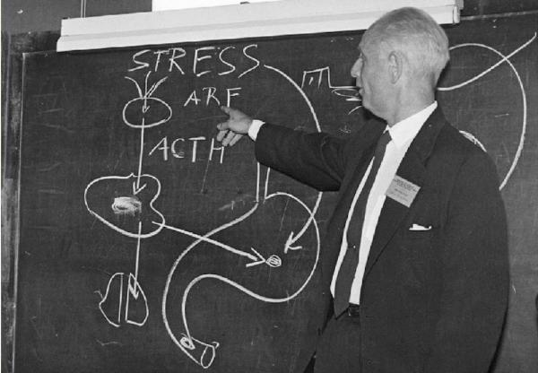

Ray Peats Early Thoughts on Protein
Up until the last few years of his life, Ray consistently advocated at least 80 grams of high-quality, balanced protein for women, and more for men. His later shift to a lower protein diet, which could be due to his older age, was meant to lower mTOR activity, which is known to be associated with aging and degenerative changes. But we must not interpret this move to a lower protein diet as a …
Read MoreChronic Disease: A Bioenergetic Paradigm
INTRODUCTION
What are chronic diseases? What distinguishes multiple sclerosis from a broken leg? Both involve damage to the organism, but while most acute diseases like fractures or cuts tend to either kill or resolve, chronic disease is usually persistent. Currently, there is no overarching medical framework that tries to explain the general features of chronic disease, and therefore also …
Read MoreFatigue Is Not Just Atp
ATP is rapidly replenished within a muscle after a single repetition of lifting maximum weight (1RM), yet strength remains reduced for days. This phenomenon is observed both in muscle fatigue studies and among experienced powerlifters. The question is: Why does it happen? Mainstream cellular physiology, with its emphasis on membranes, pumps, channels, and “high-energy” phosphate bonds, …
Read MoreLifting the Hans Selye Way
The question of exercise within Peat-related circles has often been a topic of debate. While Ray Peat has repeatedly discouraged “breathless” exercise that may increase lactic acid, he has expressed more favorable views towards concentric weightlifting. Increasing and maintaining a significant amount of muscle mass not only promotes health (muscles burn Free Fatty Acids at rest) but …
Read More